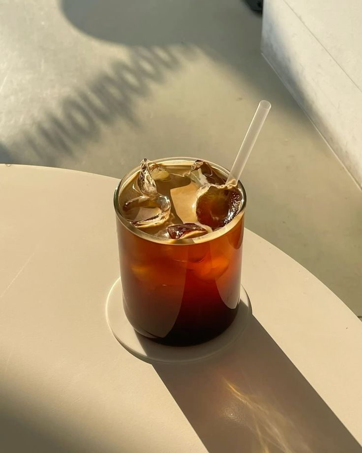
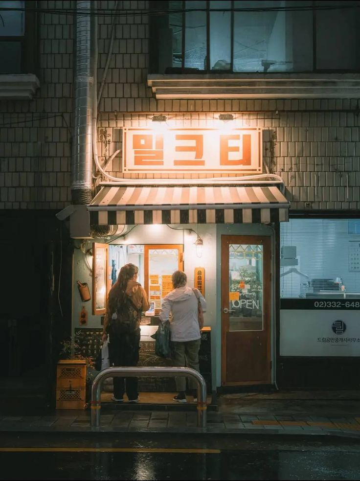
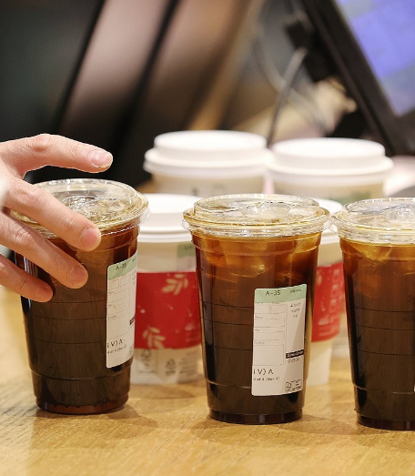

00한국의 커피
BEANSIDED: K-COFFEE
BEANSIDED는 단순한 기호식품을 넘어 대한민국의 시대적 정서와 초고속 압축 성장 스토리가 융합된 독특한 한국형 커피 서사를 알리고자하는 웹 사이트 입니다.
서구권에서 유입된 원두가 한국 고유의 '빨리빨리' 정신, 그리고 특유의 끈끈한 공동체 문화와 만나 어떻게 로컬화되었는지 분석합니다. 우리는 현대인들의 라이프스타일을 대변하는 핵심 라이프 코드를 발굴하여 정교한 데이터로 시각화합니다.
단순한 음료 정보 아카이빙에 그치지 않고, 격동의 근현대사 속에서 대중들의 가장 가까운 휴식처가 되어준 커피의 발자취를 다각도로 조명함으로써 다가올 미래의 로컬 F&B 트렌드를 관통하는 새로운 이정표를 제시하고자 합니다.

WHY WE DRINK COFFEE
오늘날 한국 사회에서 커피는 일상적인 음료의 범주를 완전히 이탈했습니다. 치열한 무한 경쟁과 고밀도의 도시 환경 속에서 치열하게 살아가는 현대인들에게 한 잔의 커피는 '합법적인 각성제'이자 치열한 하루를 버티게 하는 '심리적 방어선'의 역할을 수행합니다.
바쁜 출근길의 시작을 알리는 루틴, 업무 집중력을 쥐어짜기 위한 연료, 혹은 거대한 카페 공간이 주는 아늑함 and 안도감까지. 뇌의 활성화를 돕는 일종의 리추얼(Ritual)이자 일과 속에서 유일하게 온전한 사색을 허용하는 매개체로서의 가치를 깊이 있게 탐구합니다.
커피 한 잔에 담긴 카페인은 피로를 망각하게 만드는 도구를 넘어, 차가운 도시 속에서 잠시 나만의 세계를 구축할 수 있도록 허용하는 유일한 면죄부입니다. 24시간 꺼지지 않는 빌딩 숲 사이에서 현대인들은 커피를 통해 고립되면서도 동시에 연결되는 독특한 연대감을 형성하고 있습니다.

K-COFFEE SPECIALTY
대한민국의 커피 경쟁력은 전 세계 어디에서도 찾아볼 수 없는 '극단적 융합'과 '공간의 미학'에 핵심 축을 둡니다. 세계 최초로 스틱형 커피믹스를 상용화하여 대중화를 이끈 뛰어난 기술적 기반 위에서 한국의 커피 문화는 피어났습니다.
영하의 한파 속에서도 고집하는 '얼죽아(Ice Americano)' 열풍, 세계 최고 수준의 하이테크 무인 자동화 로봇 카페, 그리고 골목 깊숙이 숨겨진 초감성 스페셜티 로스터리 매장까지. 세상에서 가장 트렌디하고 역동적으로 진화하는 한국 커피만의 독보적인 엣지를 전합니다.
특히 전 세계적인 주목을 받는 한국의 카페 공간은 단순한 매장을 넘어 하나의 거대한 문화적 영토로 기능합니다. 초고속 무선 네트워크와 감각적인 인테리어, 실험적인 아트웍이 결합된 이 공간들은 청년 세대의 창작과 휴식, 그리고 사교를 책임지는 대체 불가능한 플랫폼으로 자리 잡았습니다.

01한국 커피의 역사
다방 낭만 시대
지성인들의 아지트
믹스커피 혁명
노란색 봉지의 기적
에스프레소 & 카페 문화
별다방이 바꾼 도시 풍경
K-감성카페 & 하이테크
전통과 현대의 충돌
02커피와 디저트 페어링
03나만의 커피?